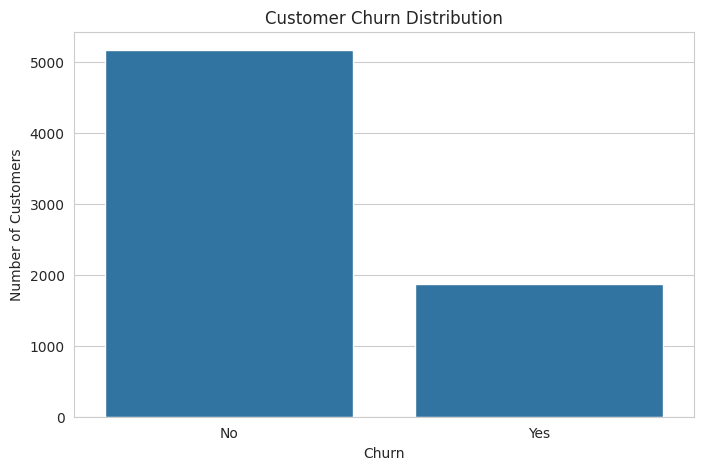
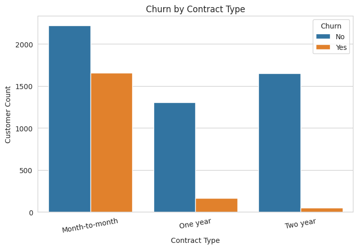
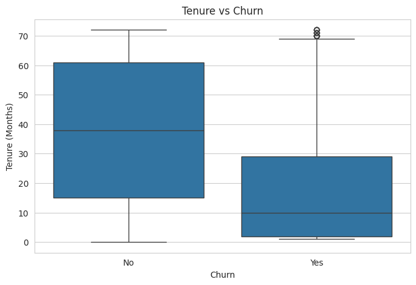
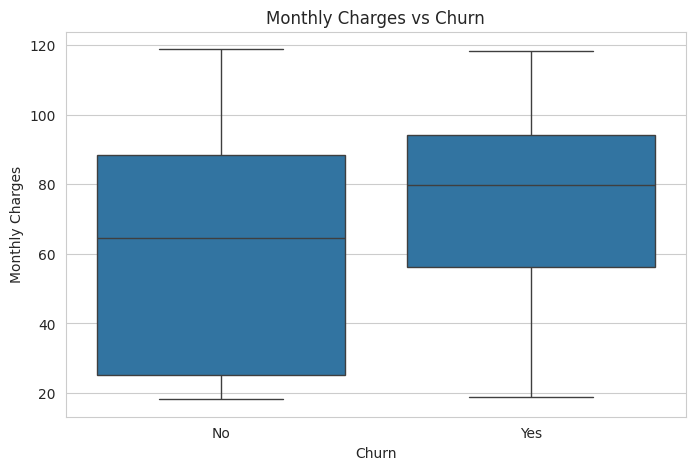

End-to-end exploratory data analysis and machine learning classification pipeline to identify at-risk customers and key attrition drivers.
View Source Code on GitHubModel Accuracy
Logistic Regression & Random Forest
Precision, Recall & F1-Score
Tenure, Contract & Monthly Charges
Exploratory analysis and model feature evaluation revealed three primary factors influencing customer churn:
New customers in their first few months show significantly higher churn rates compared to long-term subscribers.
Month-to-month contract holders churn at a substantially higher rate than customers locked into one- or two-year agreements.
Higher monthly billing tiers correlate strongly with increased attrition, especially when paired with short-term contracts.

Illustrates class distribution across 7,043 Telco customers (73.5% retained vs. 26.5% churned).

Demonstrates significantly higher attrition among month-to-month subscribers compared to annual contracts.

Boxplot comparison showing that customers who churn have substantially shorter median tenure.

Highlights higher median monthly charges among churned customers compared to retained users.